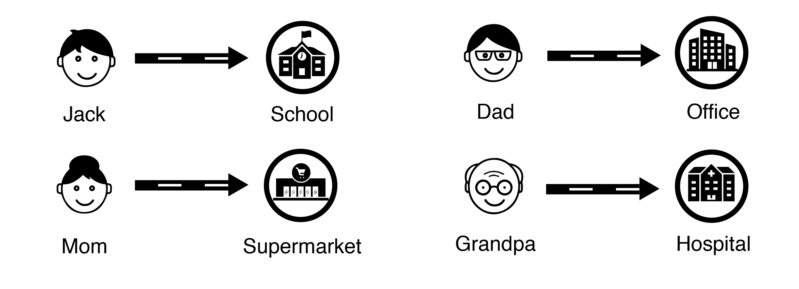

Finding the Way
Make Dijkstra’s Algorithm Easy to Understand
Have you ever heard about Dijkstra’s Algorithm? Do you know how Dijkstra’s Algorithm can be used to solve problems in our daily life? Now thinking back to a busy morning when you and your family members are all in a hurry and need to go to different places at a certain time, how did you and your family members decide the most efficient way to share the ride? Dijkstra’s Algorithm can help you find the answer.
Jack’s Family Needs Some Help
Now, let’s work together to help Jack’s family make their busy morning easier.
Jack is an elementary school student, and he lives with his Mom, Dad, and Grandpa. On a Tuesday morning, Jack needs to go to school as usual. His Dad needs to go to the office for an important meeting. His Mom is planning to go to the supermarket to buy some fresh vegetables to cook lunch. His Grandpa has a doctor appointment in the nearby hospital. They decide to leave the house together and share the ride. What is the fastest way for them to arrive at their destinations and how many cars do they need at minimum?
To solve this problem, we need to find the shortest paths between home and different destinations, and Dijkstra’s Algorithm can help us find the answer. Let’s use the directed edge-weighted graph at right as the map to solve this problem 【Please play around with the graph. You are able to drag the nodes to different places】.
Learn the Concept & Solve the Problem
Dijkstra’s Algorithm is an algorithm for finding the shortest paths between nodes in a graph (Wikipedia). The starting node is called initial node, and the end node is called destination node. The algorithm first marks all nodes in the graph unvisited. Then, it picks the unvisited node with the lowest distance, calculates the distance through it to each unvisited neighbor, and updates the neighbor’s distance if smaller. Mark visited when done with neighbors. Finally, when the destination node has been marked visited, the algorithm stops and the shortest path is found.
Let's work on the problem step by step:
Step 1
Let’s set node “Home” as our initial node and mark all nodes in the graph unvisited.
As you can see through the highlighting part of the graph, “School”, “Office”, and “Supermarket” are the three unvisited neighbor nodes for “Home”. Please calculate the distance through “Home” to each unvisited neighbor node and click on the button below to select the unvisited neighbor node with the lowest distance. 【Instruction: if the correct node is selected, you will see the calculation result of the distances of the neighbor nodes in the table on the right. If the incorrect node is selected, the button will turn red.】
Step 2
Congratulations! Now you are at the step 2. As you can see from the table on the right, the neighbor node “School” has the lowest distance (20) compared with “Office” (80) and “Supermarket” (90). Let’s mark “School” visited and set it as our new current node 【Please notice that the visited node and edge will never be checked again】. By looking at the highlighting part of the graph, we are able to see that “C” is the only unvisited neighbor node for “School”. Please click on the button below to update the distance of the neighbor node in the table.
Now, the unvisited neighbor node “C” has the lowest distance (30). Let’s mark “C” visited and set it as our new current node.
Step 3
Please calculate the distance through “C” to each unvisited neighbor node and click on the button below to select the unvisited neighbor node with the lowest distance.
Based on the table, we know that the neighbor node “A” has the lowest distance (40). Let’s mark “A” visited and set it as our new current node.
Step 4
Please calculate the distance through “A” to each unvisited neighbor node and click on the button below to select the unvisited neighbor node with the lowest distance.
Based on the table, the neighbor node “Office” has the lowest distance (50). Let’s mark “Office” visited and set it as our new current node.
Step 5
Since “Supermarket” is the only unvisited neighbor node for “Office”. Please click on the button below to update the distance of the neighbor node in the table.
Now, the unvisited neighbor node “Hospital” has the lowest distance (60). Let’s mark “Hospital” visited and set it as our new current node.
Step 6
The node “Hospital” does not have any neighbor nodes around. Please click on the button below to compute and update the table.
Now, the unvisited neighbor node “Supermarket” has the lowest distance (70). Let’s mark “Supermarket” visited and set it as our new current node.
Step 7
The node “Supermarket” does not have any neighbor nodes around. Please click on the button below to compute and update the table.
The node “B” has a distance as “Infinity”, which means there is no path from “Home” to “B”
Quiz
Now, the table is completed and the shortest paths from “Home” to all other nodes are found. We can stop the Dijkstra’s Algorithm and finish up with a quiz.
Please use the table you completed to answer the questions below.